Convivialità, musica e allegria a Casa San Michele
Lunedì 19 Ottobre 2026
I momenti di condivisione con i nostri amici dell'ASA si sono conclusi in un clima di straordinaria calore e allegria presso Casa San Michele a Borgo Maggiore.
Alla cena conviviale, generosamente offerta anche in questa occasione dall'ASA, hanno partecipato con grande entusiasmo quattro componenti della nostra associazione. Al centro della serata vi è stata una magnifica cena a base di specialità francesi dauphinoise, che ha esaltato il perfetto spirito di scambio culturale e gastronomico tra le due comunità.
Musica, canti e balli in allegria
La serata si è accesa di pura gioia quando Lino ha imbracciato la sua fisarmonica: le prime note hanno dato il via spontaneo a canti tradizionali, balli e momenti di grande socialità che hanno coinvolti tutti i presenti in un abbraccio ideale di amicizia e spensieratezza.
A tutti i promotori, agli amici dell'ASA e a chi ha reso possibili queste indimenticabili giornate va un doveroso, sentito e caloroso ringraziamento.
Un arrivederci a presto e a nuove meravigliose iniziative insieme!
Viaggio nel tempo tra storia, monumenti e il Teatro Amintore Galli
Lunedì 19 Ottobre 2026
📄 La brochure (opuscolo) è consultabile cliccando qui.
La nostra scoperta di Rimini è proseguita attraverso un itinerario affascinante nel cuore del centro storico, un vero e proprio viaggio che attraversa oltre duemila anni di storia – dall'epoca romana al Rinascimento, fino al cinema di Federico Fellini – arricchito da una visita guidata d'eccezione al magnifico Teatro Amintore Galli.
Il Teatro Amintore Galli: Storia, Architettura e Rinascita
Affacciato sulla storica Piazza Cavour, il Teatro Galli rappresenta uno dei simboli più forti della identità e della rinascita culturale della città. Progettato originariamente dal grande architetto neoclassico Luigi Poletti, fu inaugurato il 16 agosto 1857 con l'opera "L'Aroldo" di Giuseppe Verdi, diretta dal compositore stesso.
Gravemente danneggiato dai bombardamenti della Seconda Guerra Mondiale nel 1943, che distrussero la splendida sala storica, il teatro è rimasto per decenni una ferita aperta nella memoria urbana. Grazie a un complesso e rigoroso intervento di recupero strutturale e filologico basato sui progetti di Poletti, il teatro è stato finalmente riaperto il 28 ottobre 2018, restituendo alla comunità un capolavoro architettonico e un palcoscenico d'eccellenza per la musica, l'opera e la prosa.
Le tappe della passeggiata nel centro storico
L'itinerario a piedi ci ha permesso di ammirare alcuni dei monumenti più importanti di Rimini:
L'Arco d'Augusto: Costruito nel 27 a.C. e dedicato all'imperatore Augusto, è il più antico arco romano conservato al mondo, maestoso ingresso monumentale alla città alla fine della Via Flaminia.
Piazza Tre Martiri e Corso d'Augusto: L'antico Foro romano dove, secondo la tradizione, Giulio Cesare pronunciò il celebre "Alea iacta est" dopo aver varcato il Rubicone, e dove si trova il Palazzo Cima Garattoni, sede del Consolato della Repubblica di San Marino.
Il Tempio Malatestiano: Straordinaria cattedrale trasformata nel XV secolo da Sigismondo Pandolfo Malatesta, con una facciata rinascimentale progettata da Leon Battista Alberti e interni che custodiscono opere di Giotto e Piero della Francesca.
Piazza Cavour e la Vecchia Pescheria: Cuore politico medievale con la Fontana della Pigna e il pittoresco scorcio settecentesco della Vecchia Pescheria, oggi vivace punto di ritrovo serale.
Castel Sismondo e Piazza Malatesta: La fortezza malatestiana del XV secolo oggi inserita nel percorso del Museo Fellini e della suggestiva "Piazza dei Sogni".
Il Ponte di Tiberio: Capolavoro d'ingegneria romana iniziato da Augusto e completato da Tiberio nel 21 d.C., che a tutt'oggi resiste intatto ed è utilizzato da pedoni e ciclisti.
Il Borgo San Giuliano: L'antico e caratteristico quartiere dei pescatori, le cui stradine raccontano le storie e i film del celebre regista riminese Federico Fellini attraverso splendidi murales colorati.
Alcuni scatti che documentano la visita al Teatro Galli e tra le meraviglie storiche di Rimini
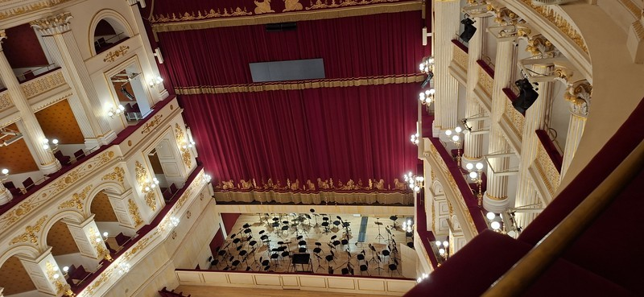
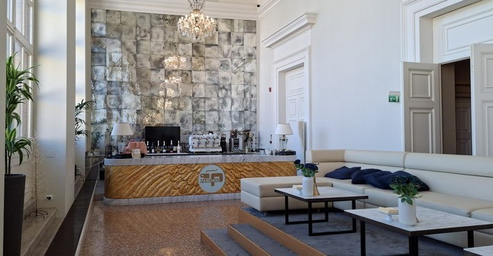
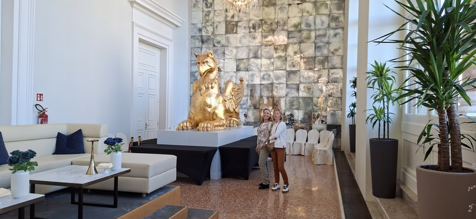
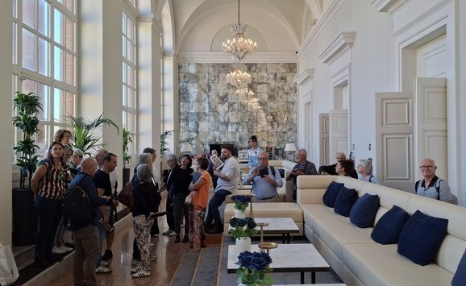
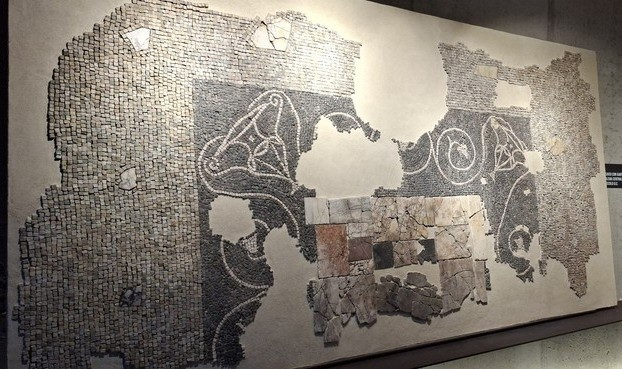
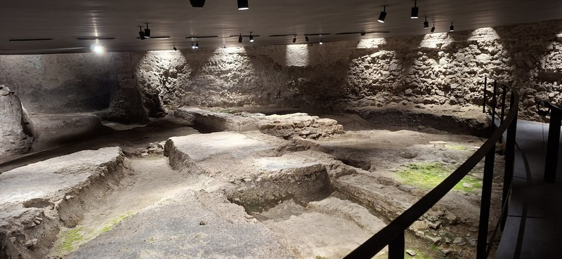
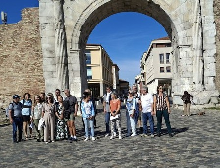
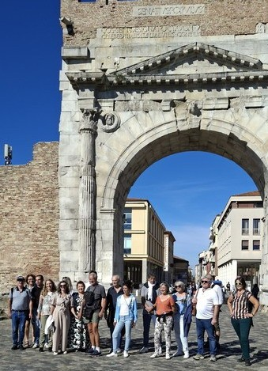
Un ringraziamento speciale all'ASA e agli straordinari attori de "La Locandiera"
Domenica 18 Ottobre 2026
📄 La brochure (opuscolo) è consultabile cliccando qui.
I partecipanti e tutta la Comunità Gente del Titano desiderano esprimere un ringraziamento sentito e profondo all'ASA (Amicale Sanmarinese des Alpes) e a Marilyn Gasperoni per il graditissimo invito ricevuto.
Abbiamo avuto il grande piacere di condividere due giornate straordinarie, a partire dalla magnifica rappresentazione della commedia "La Locandiera" di Carlo Goldoni, rendering andato in scena al prestigioso Teatro Titano di San Marino.
Una performance da veri professionisti
I commedianti sono stati bravissimi, tutti eccezionali. La commedia è stata interpretata in modo impeccabile: interventi, battute e tempi scenici erano semplicemente perfetti, degni di attori professionisti. Abbiamo inoltre apprezzato moltissimo la scelta stilistica e la cifra registica della messa in scena, con dialoghi brillanti in francese alternati a parti in italiano che hanno conferito all'opera un tono particolarmente raffinato e apprezzato da tutti i presenti.
Un ringraziamento davvero sentito va anche per la cena conviviale e amichevole tenutasi all'Hotel Joly: un momento di festa vissuto con persone splendide, che ci hanno fatto sentire fin dal primo istante completamente a nostro agio.
Iniziative come questa rinsaldano in modo mirabile i legami di amicizia, cultura e condivisione tra la nostra terra e i membri dell'ASA, confermando il valore di un ponte ideale che unisce la Repubblica di San Marino alla Francia. Grazie di cuore per le bellissime emozioni e la caldissima accoglienza!
Presentazione ASA e il Copione della commedia "La Locandiera"
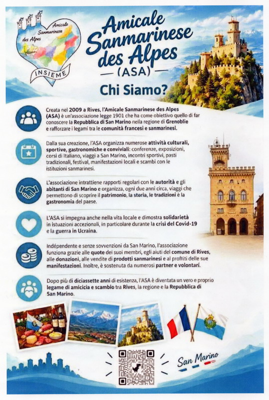
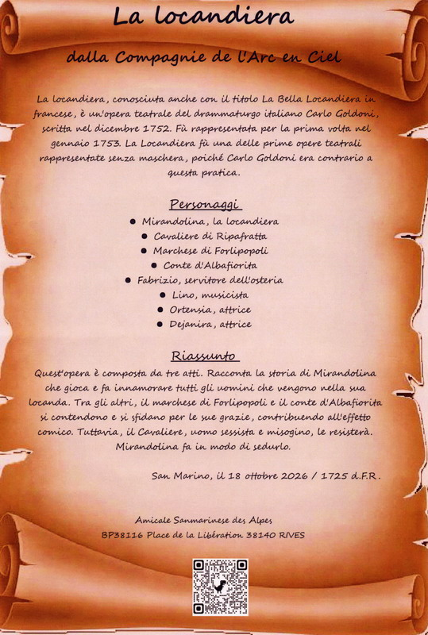
Alcune immagini e filmati che immortalano i momenti più belli della serata
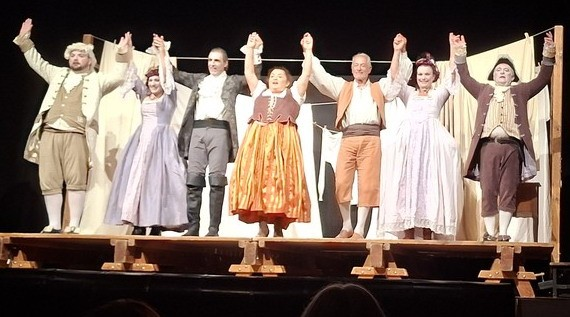
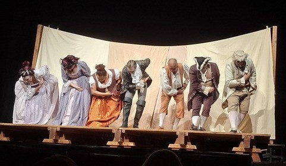
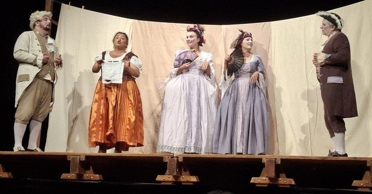
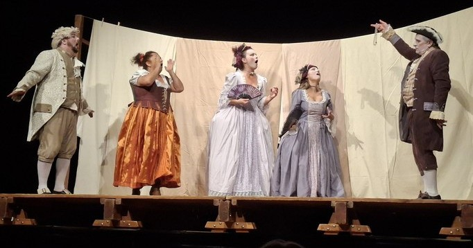
👋 Serata con i ragazzi dei soggiorni culturali
Venerdì 31 Luglio 2026
Su invito del Dipartimento Affari Esteri, abbiamo partecipato alla serata di saluto rivolta ai ragazzi del programma dei soggiorni culturali di quest'anno.
All'incontro erano presenti diversi rappresentanti e funzionari del dipartimento.
La serata si è svolta in un'atmosfera molto amichevole e cordiale, ed è stata un'ottima occasione per salutare anche chi non fa più parte della struttura.
Desideriamo ringraziare gli organizzatori e tutto lo staff per l'invito, insieme al gruppo di volontariato Nuestro Sur per la preparazione dei piatti tipici e per il supporto.
Associazione di giovani sammarinesi con radici in Argentina, nata per unire i due Paesi attraverso campagne di solidarietà e progetti di supporto all'infanzia oltreoceano.
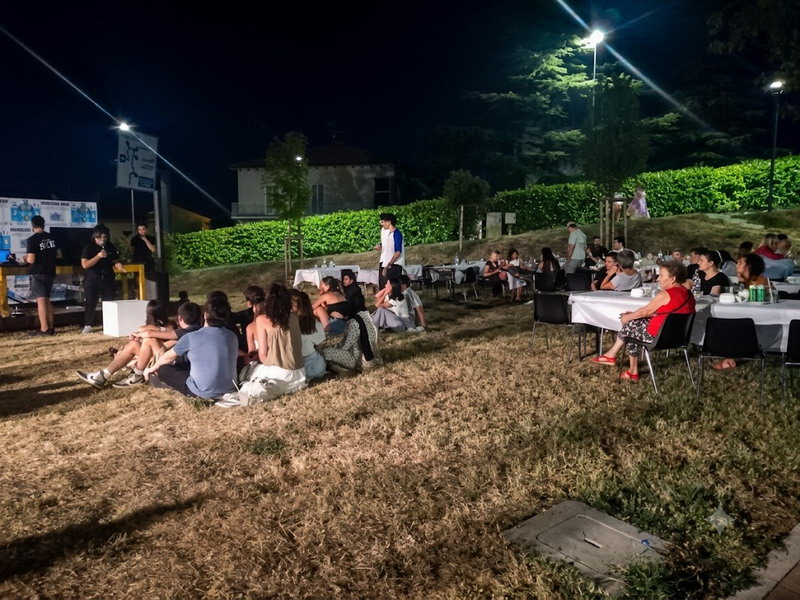
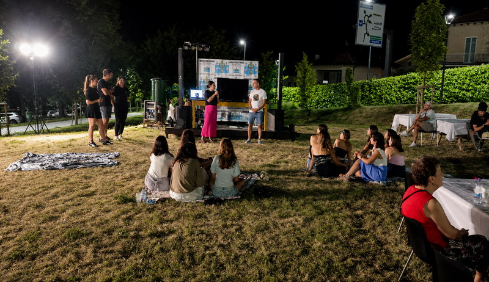
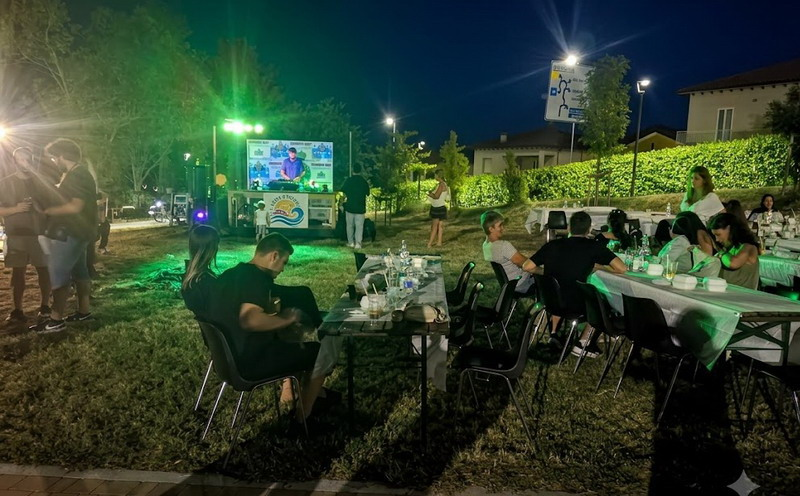
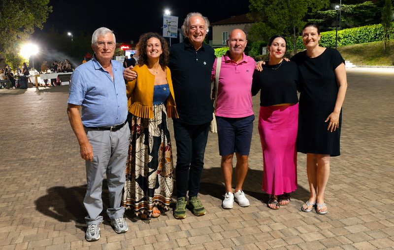
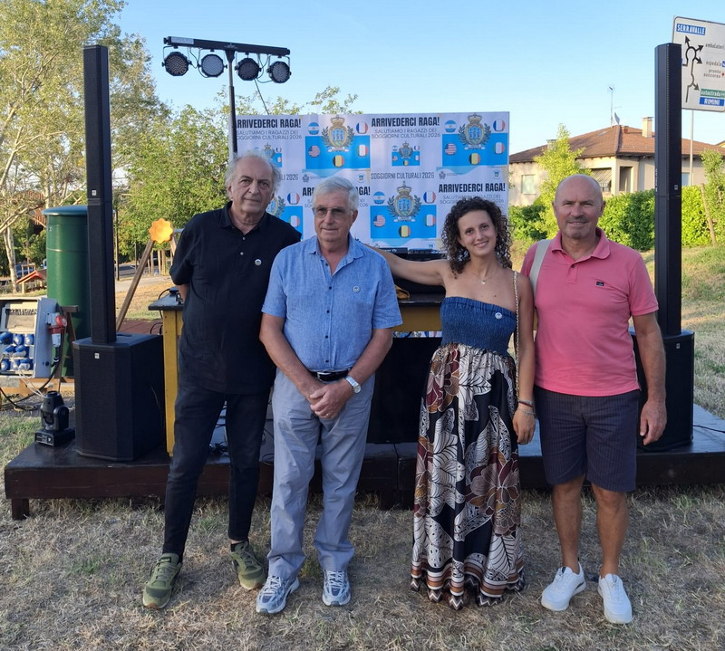
✦ ✦ ✦
🏖️ Soggiorni Culturali – Un Giorno al Mare
Mercoledì 22 Luglio
Anche quest'anno la comunità di Rimini, Associazione "Gente del Titano"
ha avuto il piacere di offrire una giornata al mare ai ragazzi dei Soggiorni Culturali e ai loro accompagnatori
presso il Bagno 105.
Dopo il pranzo al ristorantino, sono proseguite le attività in spiaggia e i momenti di relax iniziati al mattino.
I partecipanti sono poi ripartiti per San Marino nel tardo pomeriggio.
«È stato bellissimo ricevere i loro affettuosi ringraziamenti e sapere di aver allietato la loro permanenza!»
Domenica 17 maggio 2026 presso Casa Zanni si è svolta la consueta assemblea generale dell'Associazione.
Esprimiamo la nostra più profonda gratitudine per l'altissimo onore accordatoci dalla presenza, per la prima volta, delle Loro Eccellenze i Capitani Reggenti.
Il loro intervento, unito a quello delle alte cariche dello Stato, ha conferito alla manifestazione un eccezionale prestigio.
Ringraziamo sentitamente i rappresentanti delle Istituzioni della Repubblica, i Capitani di Castello, i Consoli e le delegazioni delle comunità sammarinesi in Italia: la Loro partecipazione testimonia una forte e preziosa vicinanza istituzionale.
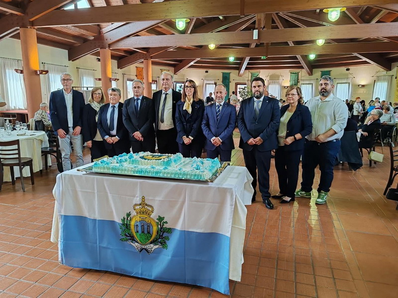
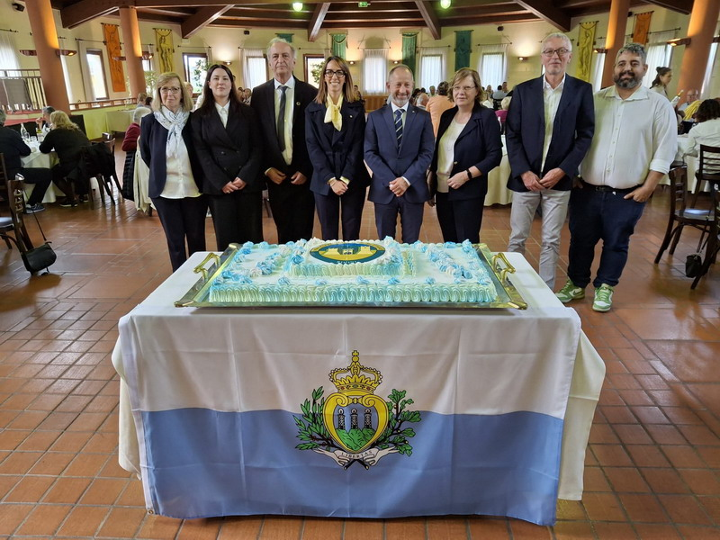
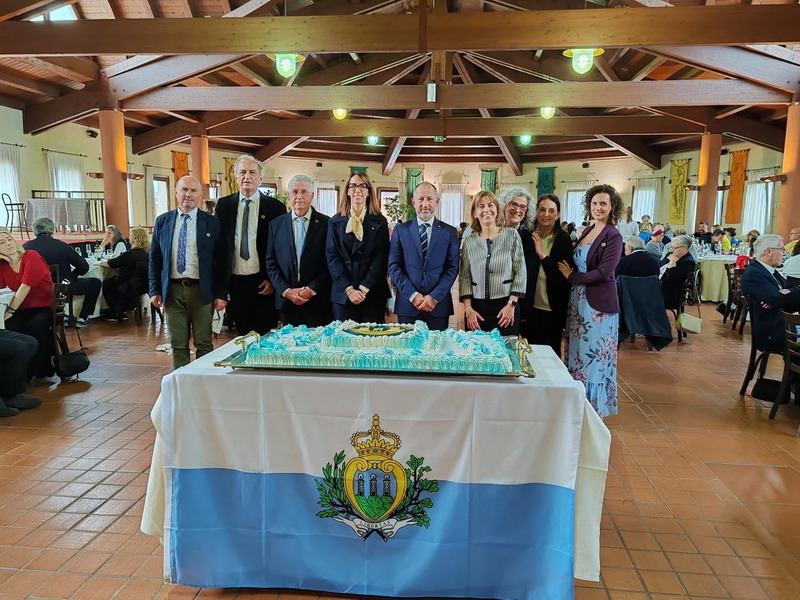
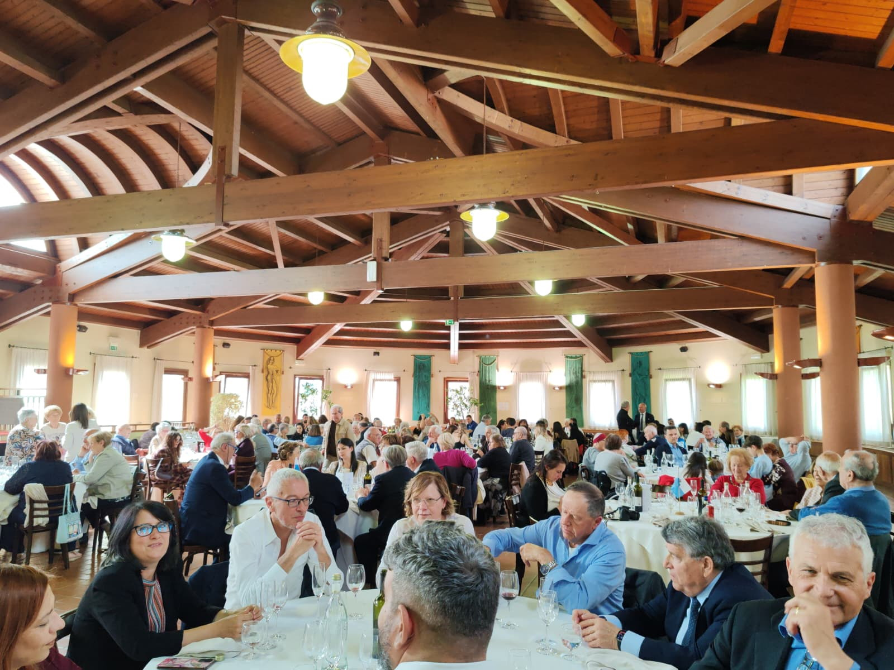
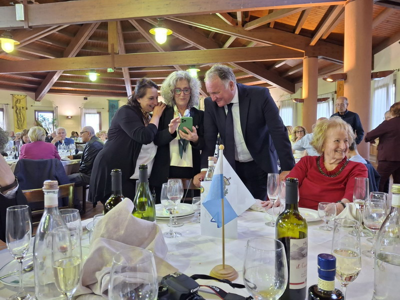
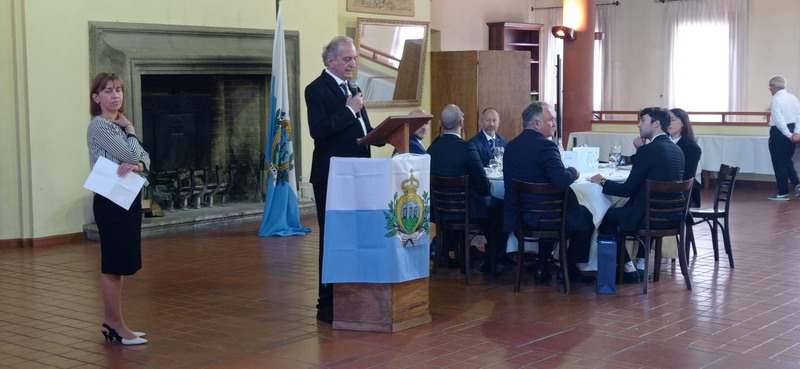
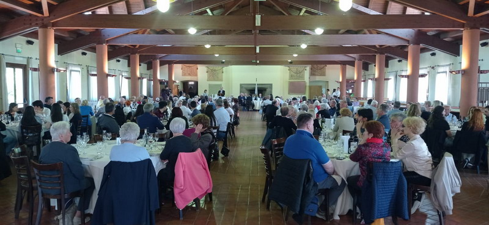
✦ ✦ ✦
🏦 Visita Centro Storico Rimini Amicale Sanmarinese des Alpes
Venerdì 8 maggio 2026
Abbiamo avuto il piacere di accompagnare una delegazione di 24 partecipanti da Grenoble, guidati da Marilyn Gasperoni, in una passeggiata esclusiva nel centro storico di Rimini.
Un percorso pensato per attraversare oltre duemila anni di storia: dall’epoca romana al Rinascimento, fino al cinema di Federico Fellini.